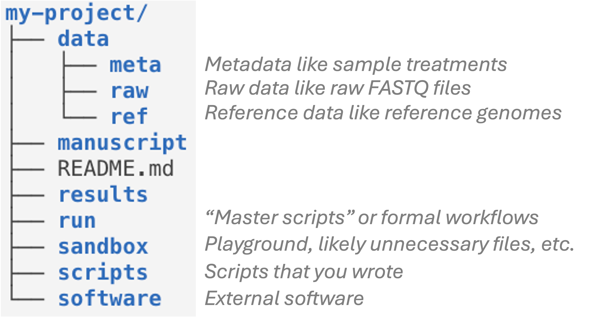
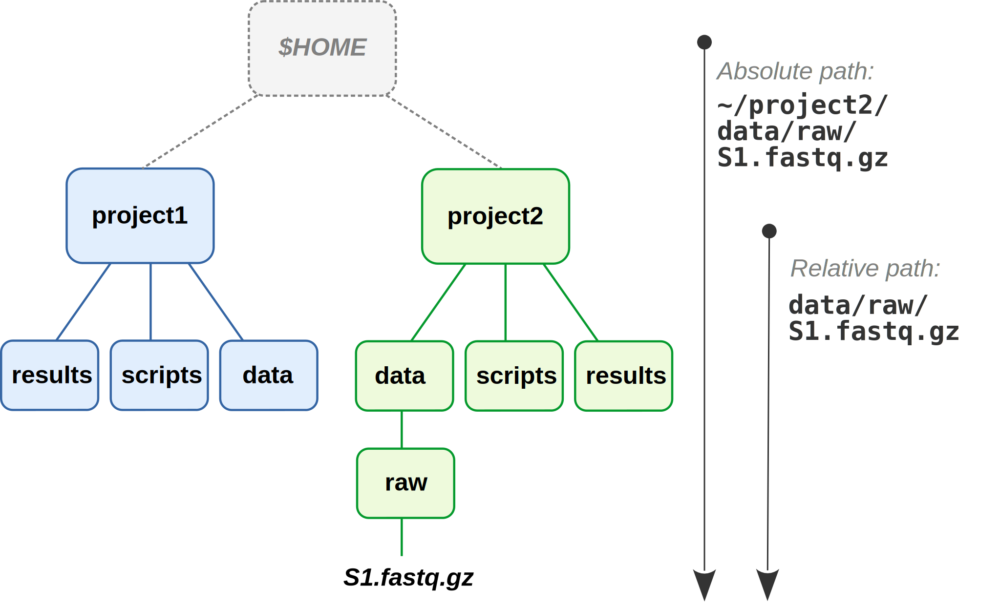

getwd()[1] "/Users/poelstra.1/Library/CloudStorage/Dropbox/mcic/teach/codeclub/codeclub-site/posts/S09E06_reprod_01"
Today is the first of a series of 6 Code Club sessions that will cover several topics under the umbrella of “reproducibility”.
What do we mean by reproducibility? Your research is reproducible when third parties are able to perform the same analysis on your data, and produce the same results.
Reproducibility is perhaps a low bar compared to the related concept of replicability, which is the ability to produce the same (qualitative) results when applying the same analysis to different data. Here is a helpful table showing these two and two other related concepts:

For example:
Say that you’ve written a paper in which you present the results of one of your research projects. When this research is fully reproducible, it means that someone else should be able to be able to run the exact same analysis and produce all the results and figures using your paper and its associated documentation.
Relatedly, when you work in a reproducible manner and you abandon an analysis for say two years, you will be able to pick up from where you left off without much trouble.
“The most basic principle for reproducible research is: Do everything via code.” —Karl Broman, University of Wisconsin-Madison
It is inherently more reproducible to write code, such as in R, as opposed to clicking around in a program with a Graphical User Interface (GUI). This is because it would generally be necessary but very tedious to record every single click that you make in a GUI, whereas it is easy to save your code.1
In addition, R is open source and freely available. If you use a proprietary program that requires an expensive license, your work may be reproducible in principle, but won’t be in practice for many people.
Research that is fully reproducible should use a set of tools and best-practice related to:
This series of Code Club sessions will not extensively cover all of the above, but we will teach three topics that do touch on all of them:
Using one folder, or really a hierarchy of folders, for one project means that you:
For example:

$HOME folder is a Home folder which exists for Mac and Linux users.When you have a single folder hierarchy for each project, it is:
Within your project’s directory hierarchy:
Also:
For example, here is one good way of organizing a (bioinformatics) research project:

.md) file is shown in black.First, “directory” (“dir” for short) is just another word for folder that you will see commonly used for anything coding-related.
Second, your “working directory” is the directory where you are currently located. When you open R (or Python, or a Terminal, etc.), it will always have a starting point at a specific location in your computer2.
There are functions to change your working dir as well as ways to refer to any location on the computer regardless of whether you are there. That brings us to the third term, path, which is a specification of the location of a file or folder on the computer.
The key concept here is that folders are separated by slashes – forward slashes in Mac and Linux, for example:
/Users/John Doe/Desktop/cats.png…and backward slashes in Windows, for example:
C:\Users\John Doe\Desktop\cats.pngThere are two types of paths:
Absolute paths start from a root (top-level) directory, and correctly point to a file or folder regardless of what your working dir is. If you think of a path as a way to point to a geographic location, then absolute paths are like GPS coordinates. The two paths above are examples of absolute (or “full”) paths.
Relative paths start from a specific working dir (and won’t work if you’re elsewhere). If you think of a path as a way to point to a geographic location, then relative paths are like directions like “Take the second left”. For example:
results/fastqc/sampleA.htmlmyscript.R, be considered a path? If so, what kind, and what is the implied location of the file?
A file name that does not include a folder, like myscript.R, can indeed be considered a path: a relative path that assumes the file is in your current working directory.
Absolute paths:
On the other hand, relative paths that use the root of the project folder hierarchy as the working dir, also work when moving the folder within and between computers.


Dropbox.In R, we can see what our working directory is using the function getwd() (short for “get working dir”):
getwd()[1] "/Users/poelstra.1/Library/CloudStorage/Dropbox/mcic/teach/codeclub/codeclub-site/posts/S09E06_reprod_01"You can see that the output path is my working directory – yours will be different as the set up of your computer organization structure is different from mine (and recall that you will see backslashes if you have Windows).
You can change your working directory using the function setwd()…
setwd("/this/should/be/your/working-directory/path")…and we recommend always using forward slashes, even on Windows! This may seem strange given what I explained above, but even though Windows natively uses backslashes, in R, you can use backslashes as it will take care of the conversion. Using forward slashes even on Windows is better for two reasons:
setwd() (e.g. setwd("C:\\Users\\John Doe")) and in other contexts where you use paths.Find a location on your computer that you would like to move to (it doesn’t matter where or what that is, this is just for practice). Then, move to that directory using setwd().
Instead of changing working directories whenever you fire up R, you can (should!) use an RStudio Project instead.
RStudio Projects are an RStudio-specific concept that create a special file (.Rproj), primarily to designate a directory as the working directory for everything within it, and to make it easy to switch between projects.
You may already have a folder on your computer for all things Code Club. If not, please create one now. You can do this outside of R in your regular file browser (or if you feel adventurous you can use the R function dir.create(), e.g. dir.create("path/to/your/dir")).
Click File (top menu bar) > New Project, and then select Existing Directory. Select the folder for Code Club that you created in the previous step.
After RStudio automatically reloads, the R working directory will be set to the place where your RStudio Project file is located.
Therefore, you should see the file ending in .Rproj in the RStudio Files tab in the lower right pane. Also, you can check your working dir:
getwd()In brief, RStudio Projects help you to organize your work and make it more reproducible:
When using Projects, you can avoid manually setting your working directory and can therefore use relative file paths to refer to files within the project. This way, even if you move the project directory, or copy it to a different computer, the same paths will still work. (Just make sure your Project is in the appropriate location: in the top-level dir of your folder hierarchy for your research project or stuff like Code Club.)
Projects encourage you to organize research projects inside self-contained folder hierarchies exactly as recommended above.
They record which scripts (and R Markdown files) are open in RStudio, and will reopen all of those when you reopen the project. This becomes quite handy, say, when you work on three different projects, each of which uses a number of scripts.
Additionally, when you switch between Projects, R will restart, which is a good thing, since you don’t want to randomly carry over objects and loaded packages across research projects.
(Or whatever other folder with R code that you may have.)
Then, switch back and forth between your two Projects.
We’ll go through three principles for good file names (from Jenny Bryan) — good file names:
Consistent and informative naming helps you to programmatically find and process files.
In file names, provide metadata like Sample ID, date, and treatment – with such file names, you can easily select samples from e.g. a certain month or treatment:
sample032_2016-05-03_low.txtsamples_soil_treatmentA_2019-01.txtAvoid spaces in file names. More generally, only use the following in file names:
Alphanumeric characters A-Z, a-z, 0-9
Underscores _
Hyphens (dashes) -
Periods (dots) .
“Name all files to reflect their content or function. For example, use names such as bird_count_table.csv, manuscript.md, or sightings_analysis.py.”
— Wilson et al. 2017
One good way to combine machine- and human-readable (opinionated recommendations):
grass-samples.For example:
mmus001_treatmentA_filtered-by-quality.bam
mmus001_treatmentA_filtered-by-quality.bam
.
.
mmus086_treatmentA_filtered-by-quality.bamsample005.YYYY-MM-DD: 2020-10-11.DE-01_normalize.R
DE-02_test.R
DE-03_process-significant.R Though this is not without caveats. For example, some programs with GUIs may be able to report the exact procedure that was used along with the results.
Conversely, if you also save say alternative R code that gives different results, and do so without annotation, you may not know what produced the results that you ended up writing down in your manuscripts.↩︎
You can think of this along the lines of opening a file browser (Finder / File Explorer etc.) – it will always have a starting point, and you can move around to go to other locations.↩︎